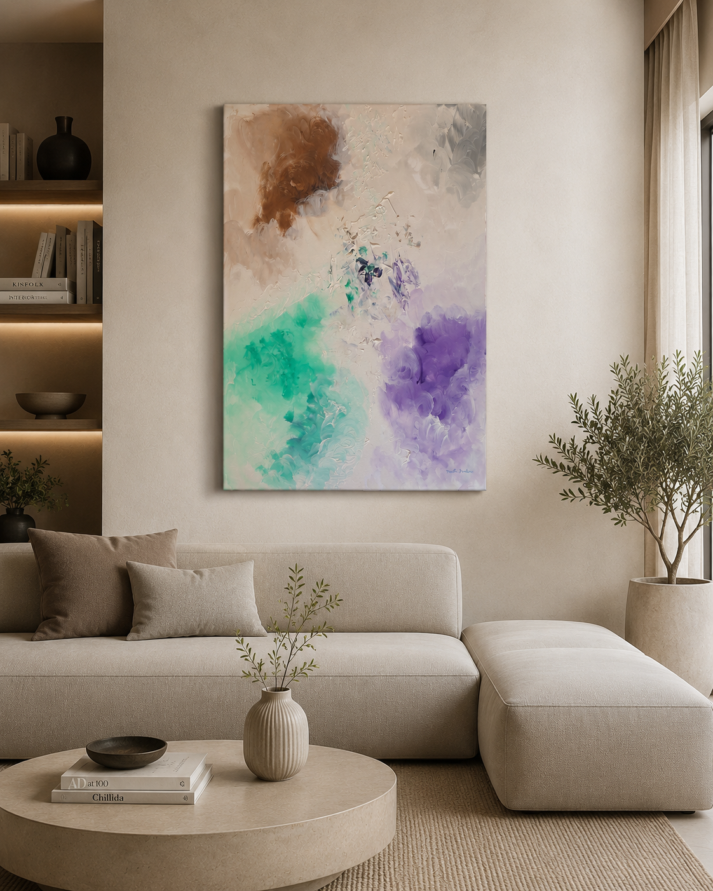
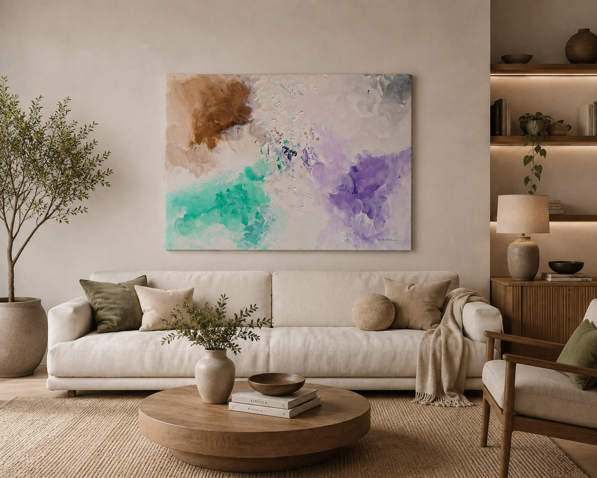

Abstracta Gallery · Collezione

Sospesi tra i Silenzi
Sospesi tra i Silenzi è un'opera astratta che racconta l'incontro delicato tra emozione e materia. Pennellate leggere e texture luminose si intrecciano in una composizione eterea, dove il marrone della terra, il verde acqua della rinascita e il viola dell'introspezione convivono in perfetto equilibrio. Gli ampi spazi di luce lasciano respirare lo sguardo, invitando chi osserva a ritrovare calma, immaginazione e libertà.
Un dipinto che non impone un significato, ma accompagna ogni persona in un viaggio silenzioso, diverso e unico, capace di trasformare l'ambiente con eleganza e poesia.
Dettagli dell’opera
L’opera nello spazio

